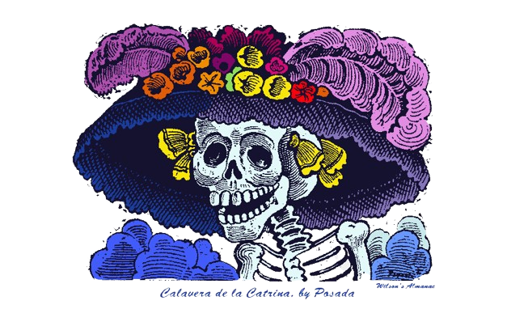

At the far end of Callejón del Truco, where light rarely touched the cobblestones, stood a crumbling adobe house draped in vines. No one ever knocked on its door. It belonged to Doña Eulalia Morales, an old woman with hair as white as bone dust and hands always stained orange from the petals of marigolds. Every year, she built an altar, an ofrenda unlike any other.
While most families decorated their altars with photos, candles, and sugar skulls, Doña Eulalia’s was made of bones. Clean, white, and arranged in patterns so precise they seemed sacred. A rosary made from tiny finger bones hung beside a skull crowned with cempasúchil flowers.
No one knew where the bones came from, and no one dared to ask.
Children whispered that she talked to the dead through the smoke of copal, that she could summon souls who had no one left to remember them. And every year, though people feared her, they left small offerings at her door, a candle, a loaf of bread — whispering: “Gracias, Doña Eulalia, for remembering those we forgot.”
One November, a young student named Tomás Rivera arrived from Mexico City to study the traditions of Día de los Muertos in Guanajuato. He loved legends but believed in reason, not ghosts. He visited the Museo de las Momias, sketching the faces of the preserved dead behind glass. Locals said the mummies sometimes moved on their own during Día de los Muertos, turning their heads toward the living, searching for someone who remembered their names. Tomás laughed it off.
That night, November 1st, he wandered through Santa Paula Cemetery, watching families’ light candles and share food with their ancestors. Musicians played soft rancheras, children danced, and the marigolds glowed like drops of sun. But one grave was different. It had no flowers, no photos, no name. Only a thin trail of marigold petals leading away into the darkness beyond the tombs.
The wind whispered: “Follow…” So, he did.
The golden trail led him through the silent alleys, past shuttered windows and flickering candles, until he reached the house at the end of Callejón del Truco. Doña Eulalia was waiting. “You followed the petals,” she said, her voice low and rough like gravel. Tomás tried to smile. “I’m studying the local customs. I didn’t mean to intrude.”
“You didn’t intrude,” she said. “You were invited.” She led him to the altar, a towering structure of skulls and bones, surrounded by candles, pan de muerto, cups of atole, and clay figures painted with tears. But at the center sat a skull untouched by candlelight. Blank. Waiting. “Each year,” Doña Eulalia whispered, “I honor the forgotten. They come to me through the tunnels. I give them light, food, and memory.” She handed him a stick of chalk. “Write your name on the skull, niño. Let them know you are listening.”
Tomás hesitated, but the candle flames bent toward him, as if drawn by breath. A chill crept up his spine. And then, softly, from somewhere behind the altar, he heard it, a whisper. “We remember you, Tomás…” The skulls rattled. The flowers wilted. And something began to rise from the floor.

Through the smoke of copal, shapes emerged, bodies thin and dry as parchment, dressed in decayed burial cloth. The dead of Guanajuato. The ones without names. The ones buried in the tunnels and abandoned graves.
Tomás stumbled backward. “This can’t be real.”
“They come every year,” Doña Eulalia said calmly. “But this time, they come for you.” The walls seemed to breathe. He ran to the door, but the alley outside was gone. In its place stretched the endless labyrinth of underground tunnels, the ones that twist beneath the city like veins of stone.
The dead followed, their feet dragging against the floor, their empty eyes glowing faint gold. He ran through the tunnels, gasping, the sound of their whispers filling the darkness.
“Don’t forget us… Don’t forget us…”
Everywhere he turned, he saw altars built inside the tunnels, small candles, offerings of stale bread and marigolds left by unseen hands. The air shimmered with heat, and he saw glimpses of faces, miners, mothers, children — all staring, all waiting. And among them, he saw Doña Eulalia’s eyes glowing like embers.
“You followed their path,” she said. “Now you belong to it.”

Tomás stumbled into a chamber deep below the city. In its center burned a single candle, its wax forming the shape of a skull. Around it lay hundreds of bones, arms reaching upward, frozen in the act of prayer. Doña Eulalia’s voice echoed through the chamber: “Light calls the living. Darkness calls the dead. Choose.”
He lifted the candle, trembling, and saw his name carved faintly into the wax. The whispers grew louder. The walls shook. And as he blew out the candle, all light vanished.
In that eternal dark, something cold brushed his shoulder.
Then, nothing.
At sunrise, the people of Guanajuato said the bells of Santa Paula rang by themselves. Later that morning, the door to Doña Eulalia’s house was found wide open. Inside, the altar had been rebuilt, larger, brighter than ever. But at the center of it, surrounded by fresh cempasúchil petals, sat a new skull.
Carved into the bone was a name:
Tomás Rivera — 1998–2023
Some say Doña Eulalia vanished that same night, her spirit finally taken by those she served. Others whisper that she still walks in the tunnels, leaving trails of marigold petals for the next curious soul. And if you walk through Guanajuato’s tunnels on the night of Día de los Muertos, when the last candle flickers and the wind carry the scent of copal, you may hear a faint whisper behind you:
“Don’t forget me…”